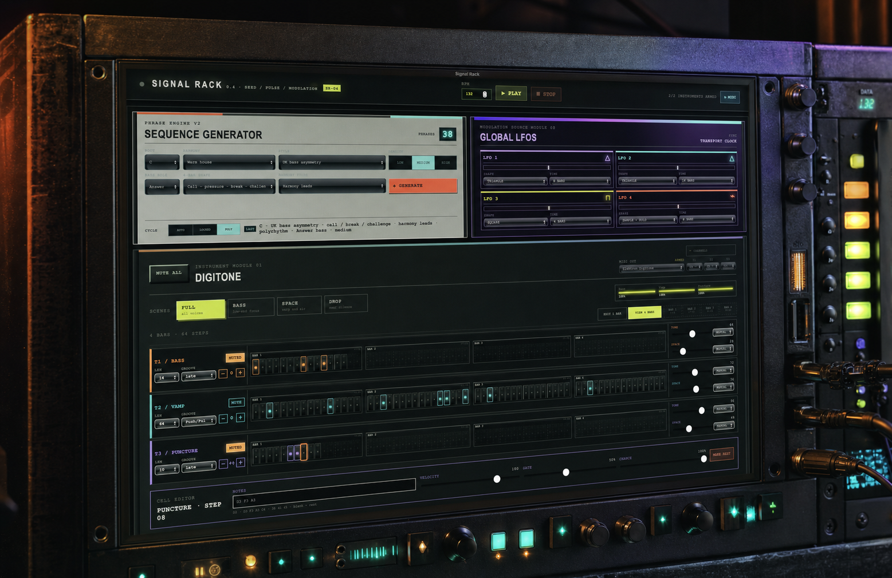

GENERATIVE MIDI ENVIRONMENTSEED / PULSE / MODULATION

DIGITONE + DIGITAKT
Find the musical idea.
Then get your hands on it.
Signal Rack turns a few musical directions into coordinated four-bar bass, harmony, melody, and rhythm—then leaves the useful controls exposed for editing and performance.
WINDOWS X64 ↓
APPLE SILICON ↓
VIEW LATEST RELEASE →
Early builds are unsigned. Windows or macOS may ask you to confirm before opening.
WHAT IT ISPHRASE ENGINE V2
A sketch machine that speaks Elektron.
The Sequence Generator coordinates every lane around one root, harmony color, rhythmic style, energy, phrase shape, and leader. It can keep everything on a four-bar frame or let selected Digitone parts drift in shorter polymetric cycles.
- DigitoneBass motifs, extended chord vamps, punctures, groove, probability, scenes, and Tone/Space macros.
- DigitaktKick, snare, closed hat, open hat, rimshot, clap, and texture patterns with editable trigs.
- Global LFOsFour transport-synced sources with per-parameter routing and bipolar depth.
WORKFLOWNO MENU DIVING
- 01CHOOSE A DIRECTION
Root, harmony, style, energy, phrase shape, and which musical family leads.
- 02GENERATE
Write a related 64-step idea into all ten instrument lanes.
- 03EDIT THE EXCEPTIONS
Change trigs, notes, chance, gates, groove, lane lengths, and voicings.
- 04PERFORM THE RACK
Use scenes, mutes, macros, and clocked modulation without losing the phrase.
QUICK STARTHARDWARE SETUP
01 / INSTALL
Open Signal Rack
Download the installer for your computer. Connect Digitone, Digitakt, or both over USB MIDI before launching.
02 / ROUTE
Select MIDI outputs
Choose each device in its module. Default Digitone channels are 1–3; default Digitakt channels are 1–7.
03 / DIGITONE
Enable notes + NRPN
Enable MIDI note reception and RECEIVE CC/NRPN so the Tone and Space controls can reach the synth.
04 / DIGITAKT
Load seven sounds
Use tracks 1–7 for kick, snare, closed hat, open hat, rimshot, clap, and texture, then enable note reception.